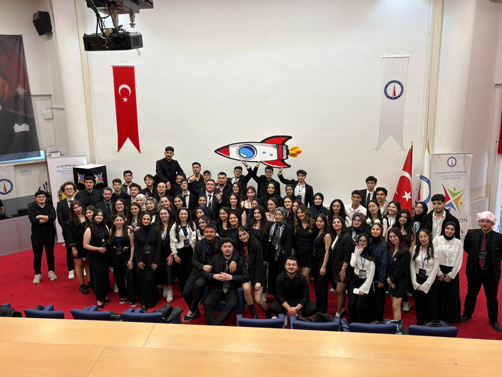
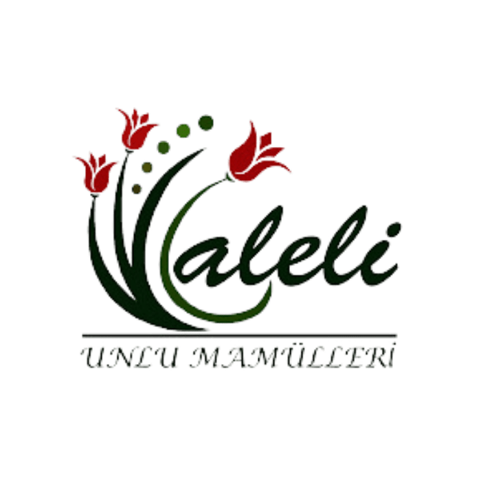
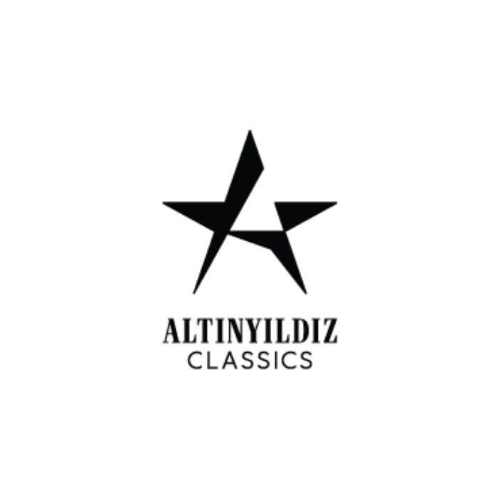

FİKİRDEN
HAREKETE.
İNOVEL.
Kariyer etkinlikleri, geziler ve ekip çalışmaları.
Kampüste birlikte yaptıklarımızı incele.
01 — BİZ KİMİZ?
KAMPÜSTE
BİRLİKTEYİZ.
2012’de kurulan bir öğrenci topluluğuyuz. Kariyer etkinlikleri, teknik geziler ve sosyal buluşmalar düzenliyoruz.
HİKÂYEMİZ02 — BULUŞMALARDAN
ETKİNLİK ARŞİVİ ETKİNLİK BİLGİLERİ
ETKİNLİK BİLGİLERİ
GEÇMİŞ ETKİNLİK 2026
İNOVEL26.
İnovel 26’nın afişi ve etkinlik bilgileri.
- TARİH
- 9–10 Mayıs 2026
- SAAT
- 10.00
- YER
- DPÜ · İİBF Konferans Salonu
04 — SIRADA SEN VARSIN
EKİBE
KATIL.
Beş departmanda çalışıyoruz. Görevleri inceleyip ilgilendiğin alan için bize yazabilirsin.
DEPARTMANLARIMIZ BİZE YAZBİRLİKTE YOL ALDIKLARIMIZ
Destekleriyle yanımızda olanlar.

